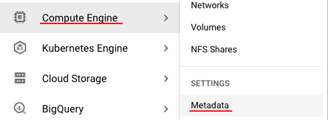
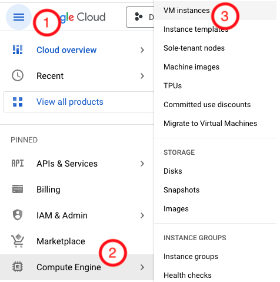
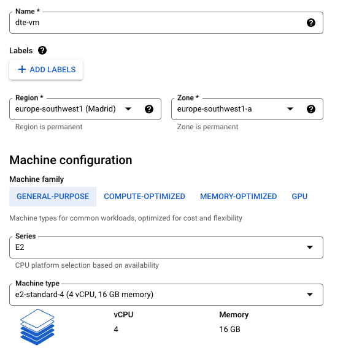
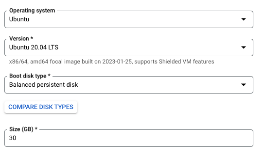
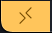
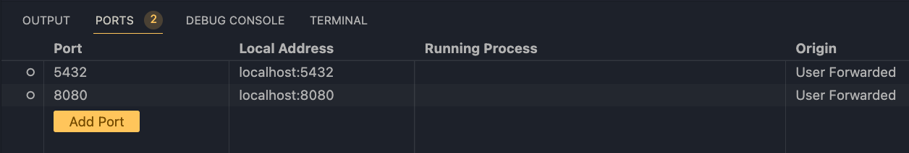

Setting up the Environment on Google Cloud (Cloud VM + SSH access)
We will need a VM instance in Google Cloud that contains everything we need for the project.
Create a VM Instance
First we generate an ssh key to connect following the documentation.
The command for MacOS is:
ssh-keygen -t rsa -f ~/.ssh/gcp -C tonivalle -b 2048
~/.ssh. Fore more info on ssh keys, click here.
Go to Menu Bar > Compute Engine > Metadata:

Info
You may need to enable the Compute Engine API (Menu Bar > Compute Engine) to be allowed to add the ssh key and otherwise use this functionality.
In the ssh keys tab you will need to add your public key. All the VM instances you create will inherit these keys.
To see the ssh key you can use
cat ~/.ssh/gcp.pub
Go to Menu Bar > Compute Engine > VM Instances:

You can click on Create Instanceand add the configuration depending on your location:

Danger
We are using a machine of type e2-standard-4 (4 vCPU, 16 GB memory) which costs $0.16 per hour. It is important to shut down the VM when we are not working to not pay more than it is needed.
On boot disk we will use Ubuntu 20.04 with 30 GB of memory 
Now we can connect to the VM via:
ssh -i ~/.ssh/gcp <Username inside your key>@<Public IP of your VM>
Another way to connect is to use a ssh config file:
touch ~/.ssh/config
code ~/.ssh/config
Host <Name of your VM>
HostName <Public IP of your VM>
User <Username inside your key>
IdentityFile ~/.ssh/gcp
ssh <Name of your VM>
Work with the VM inside VSCode
To allow editing files via ssh we can install the VSCode Remote - SSH Extension. Now, if we click on this button on the bottom left:

We can use ssh inside VSCode.
On the VM we will use:
Configure the Environment
sudo apt update
sudo apt install python3 python3-dev python3-venv
sudo apt-get install wget
wget https://bootstrap.pypa.io/get-pip.py
sudo python3 get-pip.py
sudo apt-get install docker.io
We can use docker without having to type sudo every time if we run these commands (You will need to log out of ssh and back in for the membership to aply):
sudo groupadd docker
sudo gpasswd -a $USER docker
sudo service docker restart
Pyenv
To configure pyenv (not needed but always a good idea) we can do:
curl https://pyenv.run | bash
sudo apt update; sudo apt install build-essential libssl-dev zlib1g-dev \
libbz2-dev libreadline-dev libsqlite3-dev curl \
libncursesw5-dev xz-utils tk-dev libxml2-dev libxmlsec1-dev libffi-dev liblzma-dev
export PYENV_ROOT="$HOME/.pyenv"
command -v pyenv >/dev/null || export PATH="$PYENV_ROOT/bin:$PATH"
eval "$(pyenv init -)"
pyenv install 3.9.5
pyenv global 3.9.5
Poetry
We can install the package's dependencies via poetry like in our local machine:
pip install poetry
poetry install
poetry shell
Docker-compose
We need to add docker-compose to the VM. We can do that bu running:
mkdir bin
cd bin
wget https://github.com/docker/compose/releases/download/v2.15.1/docker-compose-linux-x86_64 -O docker-compose # Change de direction to the latest release of docker-compose for your architecture.
chmod +x docker-compose
export PATH="${HOME}/bin:${PATH}"
To execute the docker-compose we clone the repo inside our VM and execute it:
docker-compose -f ./src/dtc_de_course/week_1/docker/automatic_ingestion/docker-compose.yml -d up
Port Forwarding
This technique allows us to connect ports in our VM to our local computer.
It can be done via this command depending on the direction:
# Type in the console
~C
-R 8080:localhost:80
-L 17125:localhost:12125
# Establish connections with the ports already forwarded
ssh -R [REMOTE:]REMOTE_PORT:DESTINATION:DESTINATION_PORT [USER@]SSH_SERVER
# Example
ssh -R 8080:localhost:80 public.example.com
# Establish connections with the ports already forwarded
ssh -L [LOCAL_IP:]LOCAL_PORT:DESTINATION:DESTINATION_PORT [USER@]SSH_SERVER
# Example
ssh -L 3336:db001.host:3306 user@pub001.host
Alternatively, you can use VSCode to manage it for you:

With this configuration, we can access the database on the VM in our local command line without having to connect via ssh.
pgcli -h 127.0.0.1 -p 5432 -U root -d ny_taxi
Note
Notice we changed the host (-h) from localhost to 127.0.0.1
Connecting to http://localhost:8080/ lets us see pgAdmin like if it was running on our machine.
If we also forward port 8888 we can see jupyter notebooks started on our VM in our local browser (You may need to copy the url in the VM's console since it includes the token).
Ingesting the data
We can run the data ingestion pipeline by using:
docker build -t taxi_ingest:v0.0.1 ./src/dtc_de_course/week_1/docker/automatic_ingestion
docker run -it --network=automatic_ingestion_default taxi_ingest:v0.0.1 \
--user=root \
--password=root \
--host=pg-database \
--port=5432 \
--db=ny_taxi \
--table_name=yellow_taxi_trips \
--url=https://d37ci6vzurychx.cloudfront.net/trip-data/yellow_tripdata_2022-01.parquet
Note
As always, the network name needs to be the same as your other containers in the network.
Adding terraform to the VM
We can add terraform to the VM:
wget -O- https://apt.releases.hashicorp.com/gpg | gpg --dearmor | sudo tee /usr/share/keyrings/hashicorp-archive-keyring.gpg
echo "deb [signed-by=/usr/share/keyrings/hashicorp-archive-keyring.gpg] https://apt.releases.hashicorp.com $(lsb_release -cs) main" | sudo tee /etc/apt/sources.list.d/hashicorp.list
sudo apt update && sudo apt install terraform
Adding the service account to the VM
We created a service account in the first section of the week's folder.
To do this we can use SFTP (Secure File Transfer Protocol) to do it. The json file for the service account was inside $HOME/.config/gcloud/ in our case.
cd $HOME/.config/gcloud/
# This will open an sftp console
sftp dte-vm
mkdir .gc
cd .gc
put <Name of your key>.json
We will need to set this google application credential since we cant OAUTH from the VM.
export GOOGLE_APPLICATION_CREDENTIALS=~/.gc/<Name of your key>.json
gcloud auth activate-service-account --key-file $GOOGLE_APPLICATION_CREDENTIALS
Using terraform on the VM
We can do the same in here as we did on our local machine. We will need to init, plan and
terraform -chdir=./src/dtc_de_course/week_1/terraform init
terraform -chdir=./src/dtc_de_course/week_1/terraform plan -var="project=vast-bounty-142716" # This is your project id
Stop the VM
You can stop the VM via the UI for GCP or using
sudo shutdown
Tip
Whenever you restart the machine you will need to pass the new IP given to your VM to your ~/.ssh/config.
Info on shh keys
via ssh.com.
The following simple steps are required to set up public key authentication (for SSH):
- Private key stays with the user (and only there), while the public key is sent to the server. Typically with the ssh-copy-id utility.
- Server stores the public key (and "marks" it as authorized).
- Server will now allow access to anyone who can prove they have the corresponding private key.